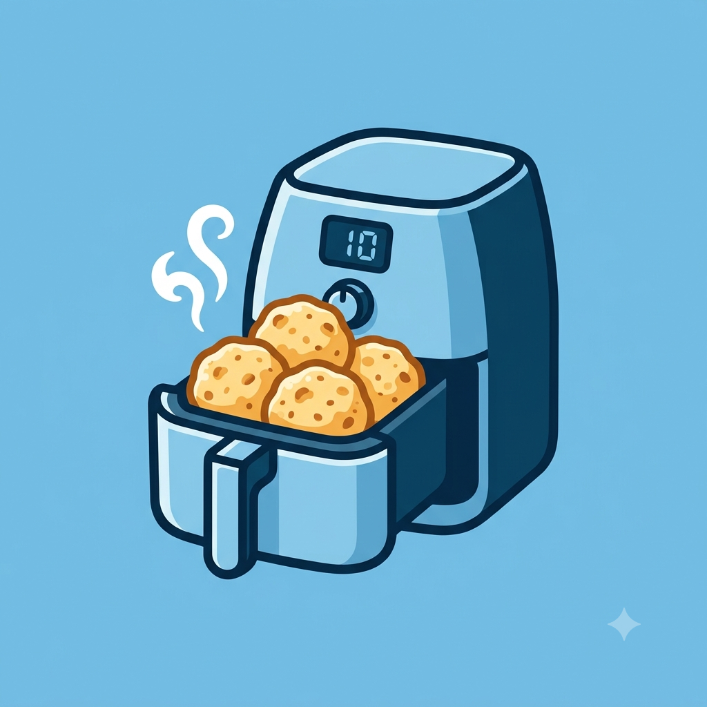
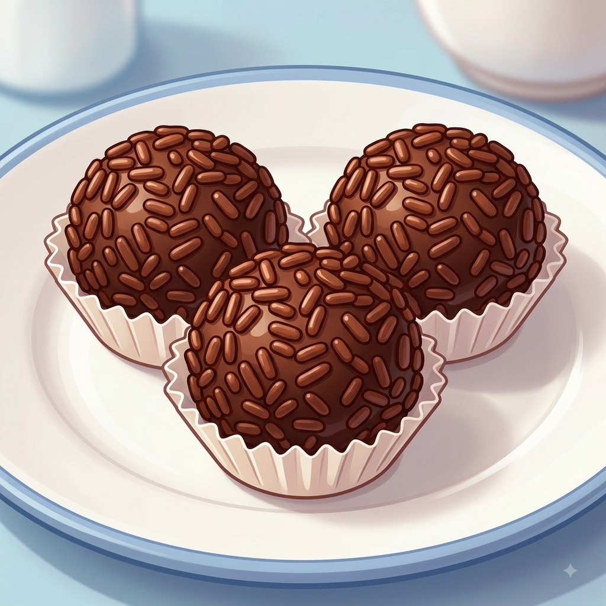

O Segredo do Bolo de Caneca Perfeito
Por: Eloisy Fernandes Geremias
Quer um doce rápido em 3 minutos? A dica de ouro é não exagerar no fermento e colocar uma colher de sopa de água na massa para não ressecar!
Fonte: Cozinha Rápida
Receitas deliciosas e as fofocas mais quentes do momento!
Por: Eloisy Fernandes Geremias
Quer um doce rápido em 3 minutos? A dica de ouro é não exagerar no fermento e colocar uma colher de sopa de água na massa para não ressecar!
Fonte: Cozinha Rápida
Por: Eloisy Fernandes Geremias
Aquele casal famoso que jura que é só amizade foi visto jantando junto novamente. Será que vem assumimento por aí?
Fonte: Choquei Pop

Por: Eloisy Fernandes Geremias
Sem tempo de manhã? Congele as bolinhas de pão de queijo e jogue direto na Airfryer a 180°C. Fica crocante por fora e puxa-puxa por dentro!
Fonte: Receitas Express
Por: Eloisy Fernandes Geremias
Vazou a lista dos participantes cotados para a nova temporada! Entre os nomes estão influenciadores polêmicos e ex-atores mirins.
Fonte: Radar dos Famosos

Por: Eloisy Fernandes Geremias
O truque para ter um brigadeiro super aveludado é usar fogo baixo, espátula de silicone e adicionar uma colher de creme de leite no final.
Fonte: Doce Mania

Por: Eloisy Fernandes Geremias
A cantora do momento anunciou turnê mundial, mas os preços dos ingressos causaram revolta entre os fãs nas redes sociais.
Fonte: Pop News